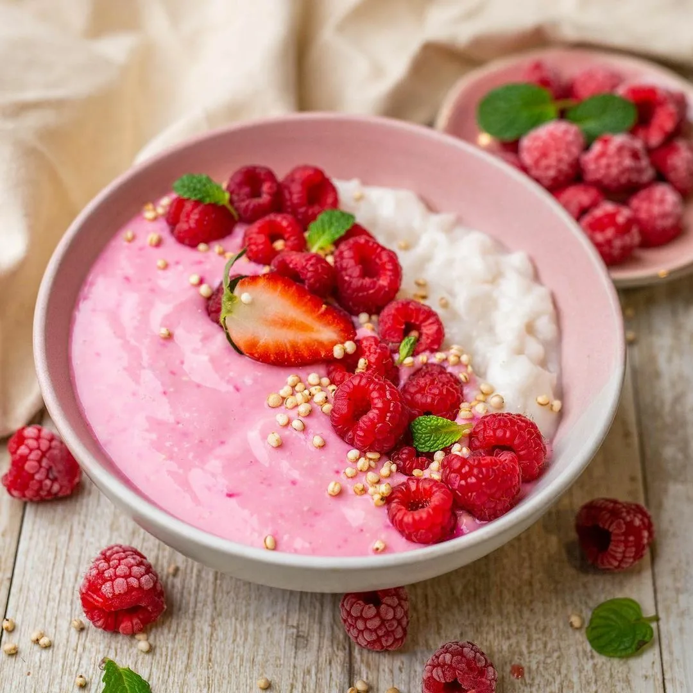
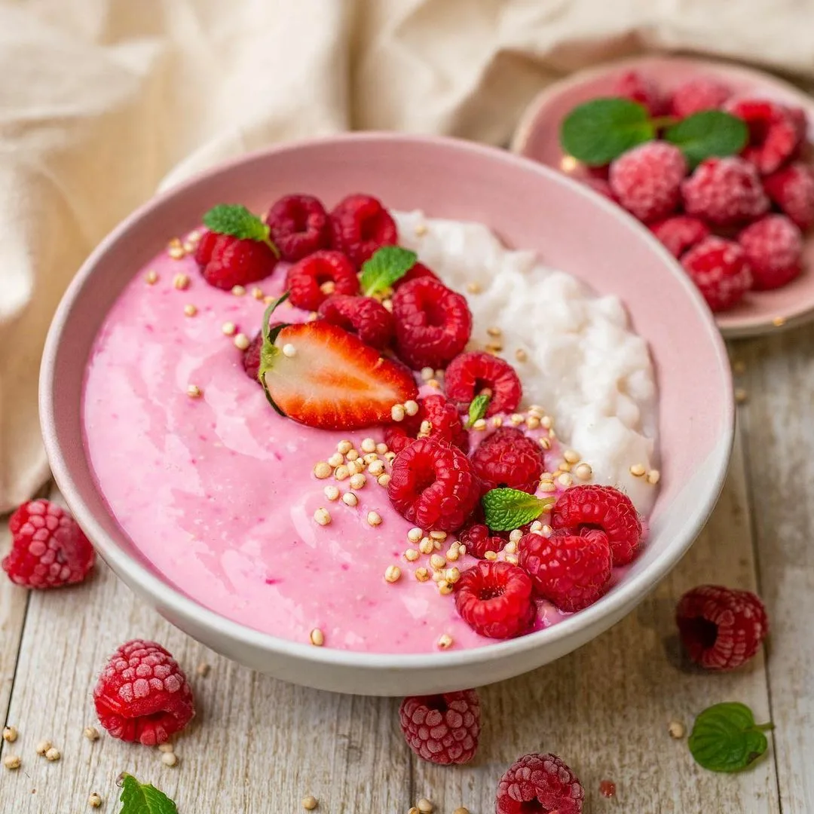
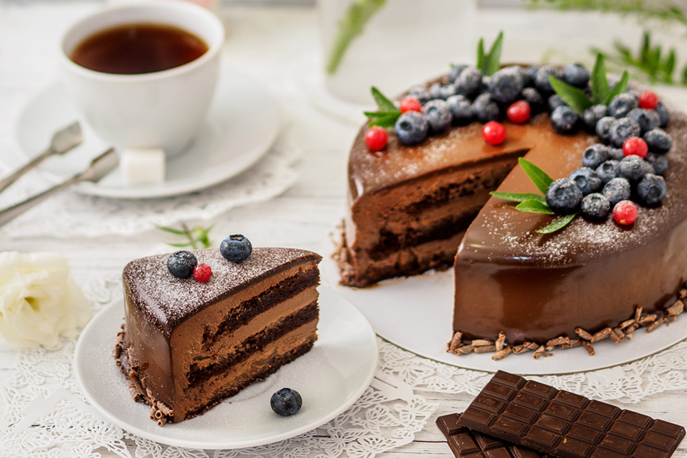

Food News
Delish has got the buzz on all your favorite food products, restaurants, freebies, promotions, and crazy cooking gadgets.
 

One of the easiest pies to make, blueberry pie should be on every baker’s to-do list—no peeling or pitting fruit required! From classic blueberry pie to new favorites like blueberry cheesecake or blueberry crumble pie, all the recipes you need are here.While it's amazing no matter where you have it, desserts differ from country to country. Some are light and fruity, and some are rich and chocolaty. From Japan's mochi to Poland's poppy seed rolls, read on to see what people use to satisfy their sweet tooth in 24 different countries.
Delish has got the buzz on all your favorite food products, restaurants, freebies, promotions, and crazy cooking gadgets.